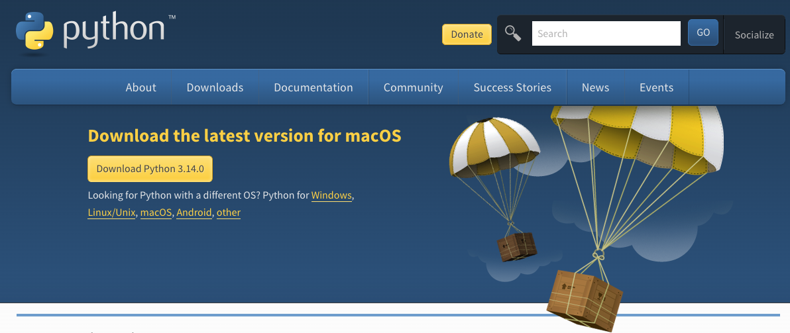
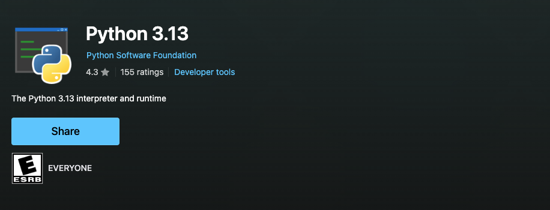

Learning Objectives
Introduction
One of the most frustrating parts of learning to code can be properly setting up the coding language on your local machine, especially as there can be multiple ways of doing it, including operating system (OS) specific methods.
Whilst we do offer you the chance to edit, run, and save Python code in a pre-configured computing space with GitHub CodeSpaces (see Course Setup), it is good to learn how to set up Python on your local machine as this is what you'll be using for your research.
This section will run through how to install Python on both Windows and Mac machines (sorry Linux users), both through the Python.org download and through an OS-specific method. Lastly, we'll run through Python installation through Anaconda, a research computing software package, and UV, a developer's tool for Python.
As of writing this we recommend Python version 3.13 as a stable but up-to-date release to use. There are continual updates to Python with big changes warranting a change in the first number, i.e. 2 -> 3, and small but still significant changes reflected in the numbers after the ., i.e. 13 -> 14. The latest version are deemed unstable, with potential major bugs that can affect how it runs. You can see the status of each version here
Checking if Python is Already Installed
The following section utilises the terminal (Mac & Linux) or command line/PowerShell (Windows). See essential tools for an introduction to this topic.
On some systems Python comes pre-installed. You can try running the python command in the terminal (Mac & Linux) or the Command Prompt (Windows) to start the Python interpreter to check and see if it is already installed. On Windows you can also try the py command which is a launcher that is more likely to work. If it is installed you will see a response which will include the version number, see below:
Python 3.13.2 (main, Feb 12 2025, 14:59:08) [Clang 19.1.6 ] on darwin
Type "help", "copyright", "credits" or "license" for more information.If nothing appears or an error is given then you will need to install Python. Additionally, check the version - the current stable release is 3.13.
Your Python version should be at least 3.9 or later.
You can also just print the version number by adding the version flag like so:
python --version.
python3 can be used in place of python. It was added when Python upgraded from Python 2 to Python 3, to distinguish between the two when you had multiple versions on your system. As we don't use Python 2 anymore, both should link to the same Python installation. However, sometimes with multiple installations they may call different ones.
Mac
Via Python.org
If you have a macOS between and including 10.9 (Mavericks) and 10.15 (Catalina), the system includes Python 2 already installed. Python 2 is no longer supported and contains outdated Python syntax and should not be used.
The best way to install Python is through a downloadable installer from Python.org. Simply head to the link provided and click the yellow download link to get the latest version.

The file should be a standard macOS installer package file (.pkg). Double-click on the file to activate the installation process, following the steps it provides. For a more detailed walkthrough head to this guide.
After completion there should be a Python 3.X folder in your Applications folder. You should also test it through the methods set out in the Checking if Python is Already Installed section.
Via Homebrew
Some of you may be used to installing software on your Mac using Homebrew, a software package manager. Homebrew-installed Python can be useful if you are already used to it, as it gives you an easy ability to manage your installation. However, there are some drawbacks. Homebrew will update Python automatically as a dependency for other packages, which has the potential to break other projects. Additionally, you will need to add this Python to the system PATH, an extra step compared to the previous method.
To install, make sure your Homebrew is up-to-date and call the following command in your Mac terminal:
brew install pythonYou can install a specific version by using
brew search python to find an earlier version, although it only contains a few recent versions. Replace python with your version of choice, i.e., python@3.11. To verify the installation use brew list python to see the installed files. You can prevent automatic upgrades of Python via brew pin python and then call upgrades when wanted with brew upgrade python.Once installed, you need to add the Python file to the system Mac PATH. You must complete this next step before it is available for use, otherwise entering the command
python will trigger zsh: command not found: python. To add to PATH we will need to edit the .zprofile file, which sets up any new terminal window. To do so we write:open -e ~/.zprofilein the terminal and add:
export PATH="$(brew --prefix python)/libexec/bin:$PATH"to the last line in the file. To have the changes take effect you will need to quit and restart the terminal. Once restarted, verify that Python is installed as instructed previously.
Windows
Via Python.org
As with Mac, the most reliable method to install Python on Windows is through the official installer from Python.org. Navigate to the downloads page and click the yellow download button to get the latest version for Windows. See here for a more detailed walkthrough.
The downloaded file will be a Windows executable installer (.exe). Before running the installer, there's one crucial step that many beginners miss: make sure to tick the "Add Python to PATH" checkbox at the bottom of the first installation screen. This is essential for being able to run Python from anywhere in the Command Prompt or PowerShell. Follow the steps in the installer.
After installation, you should test it using the methods outlined in the Checking if Python is Already Installed section. On Windows, you can use either the python command or the py command, with py being the Python launcher that's often more reliable on Windows systems.
Via Microsoft Store
Windows 10 and 11 users have an alternative option through the Microsoft Store. This method can be simpler as it handles PATH configuration automatically and provides automatic updates. However, it may have some limitations for advanced development work.
To install via Microsoft Store, simply search the store for Python and select the official Python release.

The Microsoft Store version automatically handles PATH configuration, so you shouldn't encounter the common "command not found" issues. However, some advanced Python packages may not work correctly with the Microsoft Store version, particularly those that require compilation or system-level access.
Verify the installation as shown previously.
Common Windows Issues
"Python is not recognised as an internal or external command"
This usually means Python wasn't added to your system PATH. Solutions:
- If you used Python.org installer: Re-run the installer, choose "Modify", and ensure "Add Python to environment variables" is ticked
- Try using
pyinstead ofpython - Manually add Python to PATH through System Properties > Environment Variables
Anaconda
Anaconda is a self contained Python data science distribution that contains:
- Python (you can select the version)
- 300 commonly used Python packages (extra, more specific Python code)
- conda: A tool to manage these packages
- Anaconda Navigator: A desktop graphical interface to manage your packages and environments
Why Anaconda and What is an Environment?
Anaconda is often recommended to researchers and beginners as it handles a lot for you, all within a graphical interface. This includes handling environments and package dependencies, for more information on these head to essential tools. Due to this it is often installed on all university computers and used within teaching sessions for students.
Installing Anaconda
Head to the Anaconda website for installation guides for each OS. Follow their instructions to install and then how to use Anaconda.
Mini-conda
The main Anaconda software comes with a lot of bloat, such as the 300 pre-installed packages and graphical interface, that is not needed once you get the hang of things and can eventually be an impediment to projects. If you don't want this but like the conda package/environment handler then consider installing miniconda that only includes conda, the package installing manager.
UV
Finally, we would like to briefly mention UV, a relatively new Python package installer and project management tool that has gained significant traction in the developer community. Written in Rust, UV is exceptionally fast, often 10-100 times quicker than traditional tools, and can manage Python versions, virtual environments, and packages all in one unified tool, similar to Anaconda but with a command-line focus.
While we won't cover UV in detail here, it's worth keeping in mind as it's rapidly becoming the preferred choice for many Python developers.